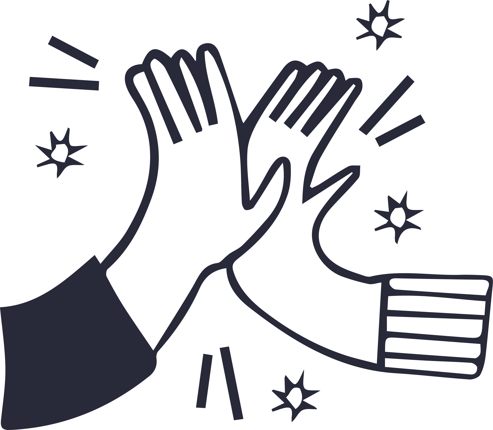
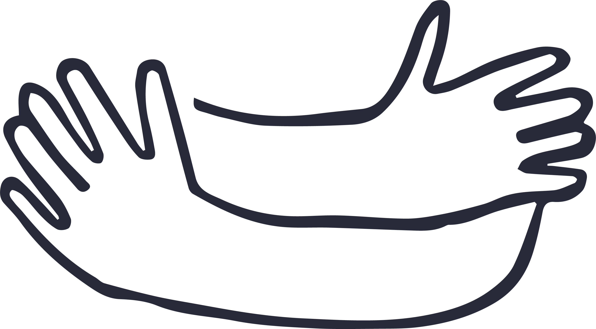

BENESSERE | SELF CARE | MENTAL HEALTH2
La bravura del terapeuta sta nello scorgere un raggio di sole senza negare l'oscurità del paesaggio
SELF CARE: LE TRE PAROLE CHIAVE
BENESSERE
La consapevolezza è il primo passo per conoscere te stesso. In terapia esploriamo insieme i tuoi pensieri ed emozioni, per iniziare un processo di crescita e comprensione più profonda.

ACCETTAZIONE
Accettare le proprie fragilità è il punto di partenza per trasformarle in punti di forza. In terapia impari ad accogliere ciò che provi e ad usarlo come risorsa per il cambiamento.

TRASFORMAZIONE
La terapia è un percorso di trasformazione, che ti porterà a riscoprire la tua libertà interiore e ad affrontare la tua vita con maggiore autenticità.
OGNI PERCORSO DI CRESCITA INIZIA CON LA SCELTA DEL GIUSTO COMPAGNO DI VIAGGIO
Il mio percorso professionale
Sono una psicologa iscritta all’Ordine degli
Psicologi della Regione Sicilia e Psicoterapeuta
Breve Focale Integrata in formazione presso
l’Istituto per lo Studio e la Ricerca sui Disturbi
Psichici (ISeRDIP).
Ho conseguito la laurea magistrale in Psicologia
Clinica presso l’Università Vita-Salute San Raffaele
di Milano e ho maturato esperienza con adolescenti
e adulti in diversi contesti educativi e clinici.
Il mio approccio si basa sulla
Psicoterapia Focale Integrata,
un modello che permette di lavorare in modo mirato
sulle difficoltà che, nel momento presente, stanno
causando maggiore sofferenza.
Insieme individueremo il
focus del percorso, ovvero i nodi
principali su cui è prioritario intervenire, con
l’obiettivo di favorire cambiamenti concreti e
significativi.
L’approccio è integrato perché non
prevede l’utilizzo di un’unica tecnica standard:
ogni persona è unica e, per questo, il percorso viene
costruito sulla base delle sue caratteristiche e dei
suoi bisogni, integrando strumenti cognitivi,
emotivi e relazionali.
Il focus non è necessariamente statico: nel corso
del percorso può modificarsi qualora emergano nuove
priorità o aspetti che richiedano maggiore attenzione.
Questa flessibilità permette di mantenere la terapia
aderente ai bisogni della persona e al momento che
sta attraversando.
Il percorso terapeutico è un
lavoro condiviso: io metto a
disposizione le mie competenze e la mia formazione
clinica, mentre la persona rimane protagonista del
proprio percorso.
Il mio ruolo è accompagnarla nell’esplorazione delle
proprie difficoltà, aiutandola a sviluppare nuove
chiavi di lettura e strategie più funzionali per
affrontarle.
Durante il tirocinio post-lauream presso
Ville Turro, ho avuto modo di
partecipare e osservare gruppi basati sulla
Dialectical Behavior Therapy (DBT),
approfondendone principi e strumenti.
Attualmente lavoro inoltre come
educatrice con adolescenti,
esperienza che mi permette di confrontarmi
quotidianamente con le difficoltà evolutive,
relazionali e comportamentali proprie di questa
fase della vita.
Ho conseguito inoltre un
Master di II Livello in Criminologia
Applicata e Psicopatologia Forense presso
l’Università Vita-Salute San Raffaele di Milano,
che mi ha permesso di approfondire il rapporto tra
psicopatologia, comportamento e contesto giudiziario
e di svolgere un periodo di osservazione presso
l’Istituto Penale per i Minorenni Cesare
Beccaria di Milano.
Il mio percorso professionale nasce quindi
dall’incontro tra formazione clinica, esperienza sul
campo e continuo approfondimento, con l’obiettivo di
offrire uno spazio di ascolto competente, rispettoso
e costruito sulle esigenze specifiche di ogni persona.
TERAPIA PER ADOLESCENTI, GIOVANI ADULTI E ADULTI
Uno spazio di ascolto e supporto psicologico per affrontare momenti di difficoltà, cambiamento o sofferenza emotiva, adattando il percorso alle esigenze e alla fase di vita della persona.
ANSIA STRESS E DIFFICOLTÀ EMOTIVE
Un percorso mirato alla comprensione e alla gestione di ansia, stress, preoccupazioni ricorrenti e difficoltà nella regolazione delle emozioni, sviluppando strategie più funzionali per affrontare le situazioni quotidiane.
AUTOSTIMA, AUTOEFFICACIA E CRESCITA PERSONALE
Un lavoro volto a comprendere e modificare quei meccanismi che possono alimentare insicurezza, autocritica e senso di inadeguatezza, favorendo una maggiore consapevolezza di sé e delle proprie risorse.
DIFFICOLTÀ RELAZIONALI
Supporto nell'affrontare difficoltà nelle relazioni familiari, affettive, amicali o professionali, lavorando sulle modalità comunicative, sui bisogni personali e sugli schemi relazionali che possono generare sofferenza.
MOMENTI DI CRISI E CAMBIAMENTO
Un sostegno nei periodi di particolare vulnerabilità, perdita, separazione, cambiamenti importanti o difficoltà nell'affrontare nuove fasi della propria vita.
DIFFICOLTÀ DELL'ADOLESCENZA
Un intervento rivolto agli adolescenti e alle loro famiglie per affrontare difficoltà emotive, relazionali, scolastiche e comportamentali proprie della fase adolescenziale.
UN PASSO VERSO IL CAMBIAMENTO INIZIA CON UNA CONVERSAZIONE
Conosciamoci
Che tu stia cercando supporto per un momento difficile o desideri intraprendere un percorso di crescita personale, sono qui per ascoltarti e guidarti. Il primo colloquio conoscitivo rappresenta un'opportunità per capire insieme come posso aiutarti.
a.magropsi@gmail.com
+39 3515573526
Profilo LinkedIn
DOMANDE FREQUENTI
FAQ
Alcune risposte alle domande più frequenti sul percorso psicologico.
No. È possibile rivolgersi a uno psicologo anche quando non si ha una diagnosi, ma si sta attraversando un momento di difficoltà, cambiamento o sofferenza e si desidera comprendere meglio ciò che si sta vivendo.
Il primo colloquio serve anche a questo. È uno spazio per conoscerci, comprendere insieme la situazione e valutare quale tipo di intervento possa essere più adeguato alle tue esigenze.
Ogni colloquio ha una durata di 45 minuti.
Il costo di un colloquio è di 60 €.
Sì. Gli incontri possono essere svolti online oppure in presenza presso il mio studio a Milano, in Via Rossini 3.
Gli incontri hanno generalmente una cadenza settimanale, ma la frequenza può essere concordata e modificata nel corso del percorso in base alle esigenze della persona e agli obiettivi condivisi.
Non esiste una durata uguale per tutti.
La Psicoterapia Focale Integrata permette di
lavorare in modo mirato su obiettivi specifici,
monitorando nel tempo l'andamento del percorso.
Il focus può inoltre essere ridefinito qualora
emergano nuove priorità.
Sì. Il percorso viene concordato e monitorato insieme. Anche la conclusione rappresenta una fase importante del lavoro terapeutico e, quando possibile, viene discussa e programmata insieme, valutando i risultati raggiunti e gli eventuali aspetti ancora da approfondire.
Certamente. Non è necessario avere già chiaro
quale sia il problema o quale percorso
intraprendere.
Il primo colloquio può essere proprio l'occasione
per fare chiarezza sulla situazione e comprendere
insieme da dove iniziare.